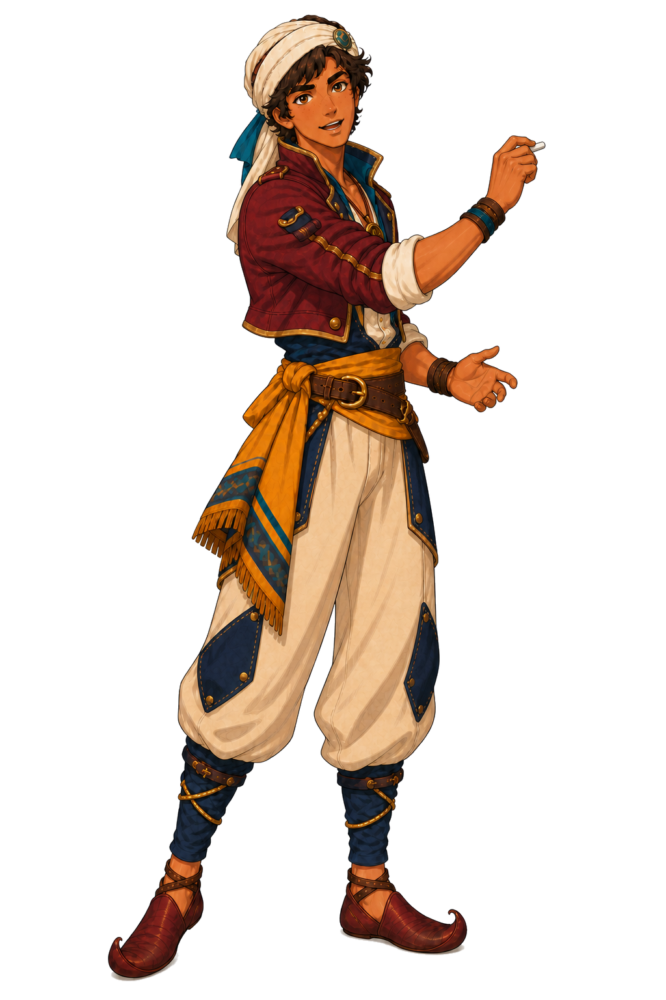

⚓
Sinbad Academy
Independent classroom window
Use the Windows title bar to move, resize, minimize or maximize this classroom.
SINBAD MARINE ACADEMY
Maritime Classroom
Close classroom

Captain Sinbad's board
Training module
GASM seyir sınav soruları (643 soru yüklü)
STCW foundation
GOC radio communication foundation
General maritime education
Chart reading and hydrography
Tides and water levels
Currents, set and drift
COLREG and navigation rules
Electronic navigation and ENC
Marine weather
Open lesson
Practice question
Choose a module. Lessons and source search remain available without an internet connection.